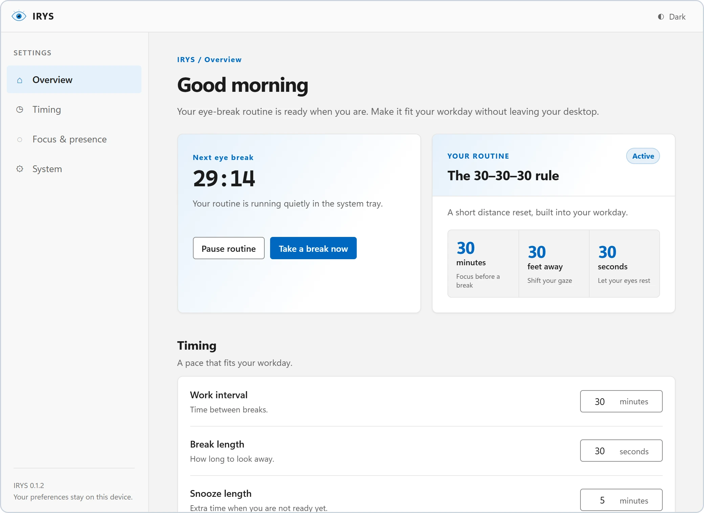
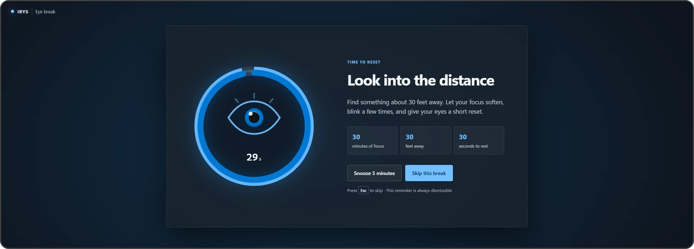

The clock lives in Rust, not in a window
Your computer
Idle time
Windows only
Full-screen check
Windows only
Rust owns clock and state
Scheduler
Once a second, on real elapsed time.
State machine
No clock, no I/O, no Tauri types in it.
Effects
Tray tooltip, windows, notification.
commands
state, each second
Vue only renders

Settings window
Pause, break now, preferences

Break window
Ring, Skip, Snooze, Esc